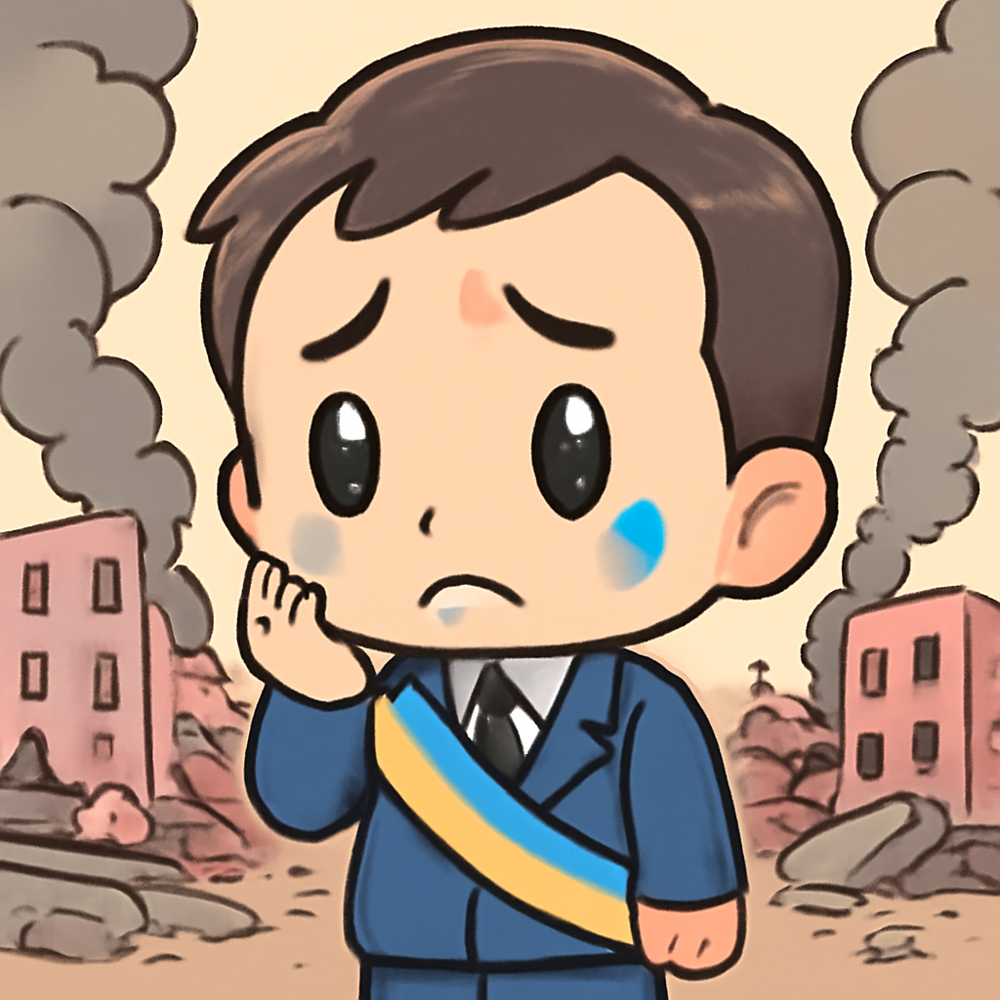
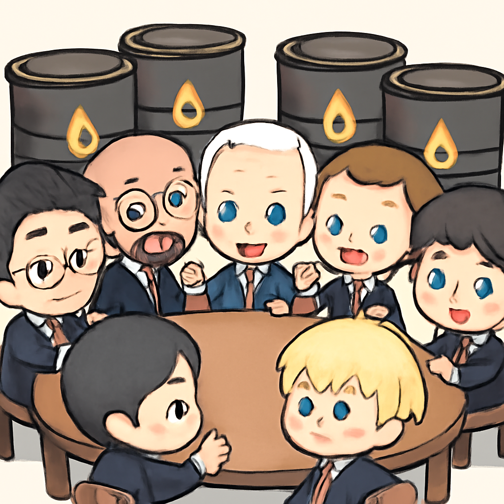
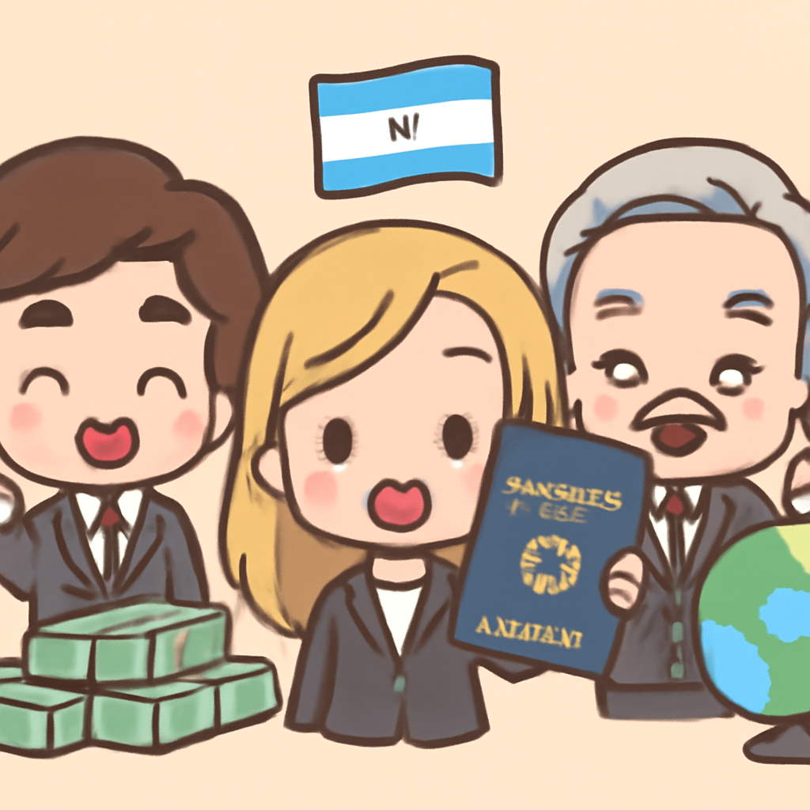

其一 · 烏克蘭基輔 · 俄羅斯空襲加劇
基輔面臨俄羅斯的猛烈攻擊，基礎建設損毀嚴重。

在烏克蘭首都基輔，市長克里奇科近日警告，俄羅斯的空襲已造成基礎建設的嚴重破壞，當地局勢可謂相當緊張。這不僅影響了民生，也讓國際社會再次關注烏克蘭的安全情勢。希望這場戰爭早日結束，讓人們能夠重回平靜生活。
🔗 原始新聞 ↗
2026-10-03 · 以古觀今，以笑抗愁
基輔面臨俄羅斯的猛烈攻擊，基礎建設損毀嚴重。

在烏克蘭首都基輔，市長克里奇科近日警告，俄羅斯的空襲已造成基礎建設的嚴重破壞，當地局勢可謂相當緊張。這不僅影響了民生，也讓國際社會再次關注烏克蘭的安全情勢。希望這場戰爭早日結束，讓人們能夠重回平靜生活。
🔗 原始新聞 ↗
法國學生因教育標準不滿，數百所學校受到影響。
在法國，學生們因為對教育標準的不滿而爆發抗議，導致735所學校受到干擾，甚至與警方發生衝突。這場運動反映出年輕人對於未來的焦慮，也讓教育問題成為熱議話題。說不定再這樣下去，法國的學校會變成戰場，大家都得學習如何躲避催淚瓦斯！
🔗 原始新聞 ↗
G7國家將釋放1億桶石油以應對價格飆漲。

在美國華府，G7國家決定協調釋放1億桶石油，旨在防止油價進一步飆升，並避免美國柴油出口禁令的影響。這一舉措不僅影響全球油市，也可能牽動各國經濟，讓我們一起關注油價會不會跟著跳舞！
🔗 原始新聞 ↗
日本首位請產假的市長入選TIME100榜單，成為焦點。
在東京，首位請產假的市長川田翔子登上了TIME100 Next榜單，這在日本引起了不少討論。她的選擇不僅挑戰了傳統觀念，也讓人們對日本日益嚴峻的出生率問題有了新的思考。希望未來能看到更多勇敢破框的女性！
🔗 原始新聞 ↗
阿根廷推出黃金護照計畫，吸引外國投資者。

在阿根廷，政府推出了一項黃金護照計畫，允許外國投資者通過投資獲得國籍。這樣的計畫在小國中並不少見，但也伴隨著風險和爭議。這不禁讓人想，究竟是為了金錢還是為了家園？
🔗 原始新聞 ↗